1. fx-ct-scene-cut at 0.9 s
Largest structural error: 95.8671 /255; FAIL


Owner review with provisional limits. Mobile / hardware desktop / Gaussian difference x16. The original strict pixel audit remains separately available.
Largest structural error: 95.8671 /255; FAIL
Largest structural error: 58.9922 /255; FAIL
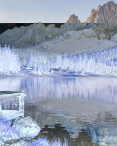
Largest structural error: 37.5597 /255; FAIL

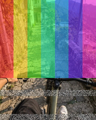
Largest structural error: 24.0248 /255; FAIL


Largest structural error: 21.5513 /255; FAIL
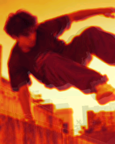
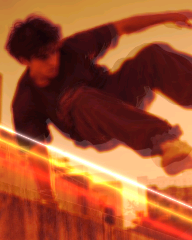
Largest structural error: 18.3781 /255; FAIL
Largest structural error: 13.5956 /255; FAIL


Largest structural error: 13.0726 /255; FAIL

Largest structural error: 11.6399 /255; FAIL
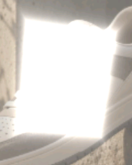
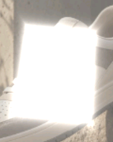
Largest structural error: 10.4997 /255; FAIL
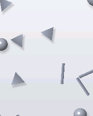
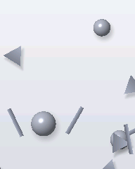
Largest structural error: 8.6137 /255; FAIL


Largest structural error: 6.9639 /255; FAIL
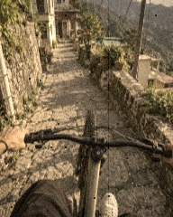
Largest structural error: 6.4844 /255; FAIL


Largest structural error: 6.3659 /255; FAIL
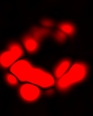
Largest structural error: 6.3112 /255; FAIL
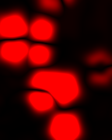
Largest structural error: 6.1877 /255; FAIL
Largest structural error: 6.0563 /255; FAIL
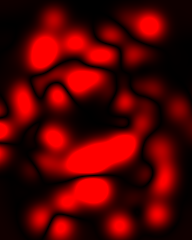
Largest structural error: 5.5044 /255; FAIL
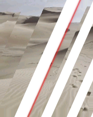
Largest structural error: 5.2227 /255; FAIL
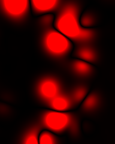
Largest structural error: 5.0915 /255; FAIL